最全Pycharm教程（8）——Django工程的创建和管理
最全Pycharm教程（4）——有关Python解释器的相关配置
最全Pycharm教程（6）——将Pycharm作为Vim编辑器使用
1、主题
这部分教程主要介绍如何通过Pycharm创建、管理、运行一个Django工程。对于Django模块的相关知识大家可以参考Python社区。
2、准备工作
（1）Pycharm为3.0或者更高版本。
（2）电脑上至少安装了一个Python解释器，2.4到3.3版本均可。
这部分教程所用的环境配置如下：
（1）Django模块的版本为1.6.5
（2）默认为Windows模式下的快捷键配置
（3）这部分例子与Django模块的说明文档中所用的实例相同Django documentation
3、创建一个新工程
实际上所有工程的创建都可以通过单击Welcome screen界面上的Create New Project按钮来实现。
如果你已经打开了一个工程，可以通过菜单栏File → New Project...来创建一个新的工程。接下来在 Create New Project dialog对话框中输入工程名字、选择类型以及用到的解释器版本：
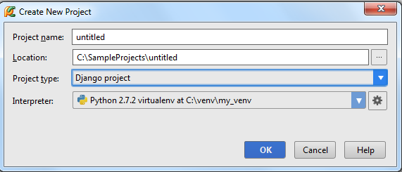
单击OK，工程的个性化设置完成。
这就意味着对应目录已经创建完成，并且预先定义了一个.idea目录用来保存配置信息project settings。
对于一个空的工程empty project，创建的环节已经完成了。接下里你就可以开始编写程序。但对于一些所支持的第三方框架，还有一些工作要做。根据所选择的工程类型，Pycharm会提示我们进行一些额外的框架设置。
在本实例中，让我们来创建开发一个Django应用。
4、创建一个Django工程
因此，在Create New Project对话框中我们的工程类型选择为Django，注意Pycharm会提示我们安装Django框架，如果当前环境中没有可用的话。
接下来我们进行Django工程的相关设置：
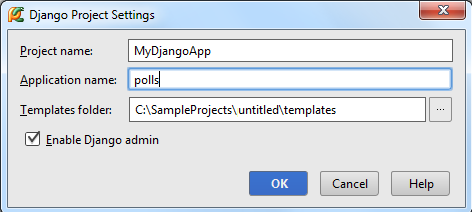
单击OK，设置完成。
5、工程目录结构
正如上面所说，工程的根目录结构已经创建完成，主要包含基本的框架配置文件和目录，当你创建其他类型的工程时也会有类似操作，如t Pyramid, 或者Google App Engine。
接下来我们研究如何在Project窗口中显示工程结构。
这是默认显示模式。窗口中将会显示的结构有polls和MyDjangoApp目录，当然还有两个Python文件：manage.py和settings.py。
在这个窗口中你是无法看到.idea目录结构的。
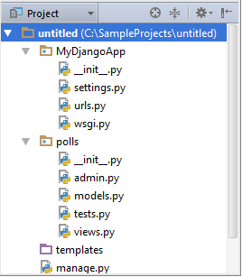
7、Project窗口下的工程文件
如果你想看到idea目录，只需选择view Project Files模式，这个视图所显示的文件和之前一样，只是多了idea目录：
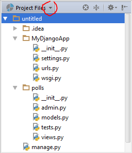
Ok,回到之前的视图模式。
8、Project窗口中所显示的文件都是干什么用的？
（1）untitled目录是工程的容器，在窗口中以加粗字体显示。
（2）manage.py是一个命令行文件，帮助你操作你的Django工程，详见product documentation
（3）嵌套子目录MyDjangoApp充当了当前工程的库
（4）MyDjangoApp/_init_.py是一个空文件，用来指示当前目录应该作为一个库来使用。
（5）MyDjangoApp/settings.py包含了当前工程的相关设置configuration for your Django project
（6）MyDjangoApp/urls.py包含了当前工程响应的url信息URL declarations for your Django project
（7）MyDjangoApp/wsgi.py定义了WSGI兼容模式下Web服务器的入口，详见How to deploy with WSGI
（8）polls目录下包含了完善Django应用的所有文件（此时为空）：
polls/_init_.py指示当前目录应该作为一个库来使用
polls/models.py保存我们所创建的应用程序模型
polls/views.py保存我们的views
（9）templates为空，用以包含响应的模板文件
值得一提的是你可以创建很多Django应用，通过运行manage.py文件的startapp任务来将其添加到当前工程中（主菜单上的Tools→Run manage.py task）命令。
9、配置数据库
根目录生成后，我们需要做一些微调。打开文件settings.py（选中后按F4）。
首先确定准备在应用程序中使用哪种数据库。可以通过以下方法定位DATABASES变量：按下Ctrl+F，然后在搜索栏中输入需要查找的字符串，然后在'ENGINE'行的冒号后边输入使用的数据库管理系统（这里暂且设置为sqlite3）。
在'NAME'行，输入预定义数据库的名称（无论其是否已经存在）：
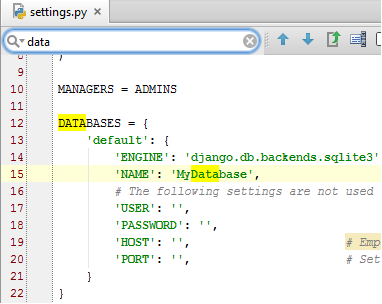
10、加载Django服务
由于我们在这里处于谨慎选择了sqlite3数据库。因此这里无需再定义其他变量（如用户证书、端口号、POST文件等）。接下来我们核实一下我们的设置是否正确，做法相当简单，至于要加载并运行 manage.py文件：按下Ctrl+Alt+R，在弹出的消息框中输入任务名称：
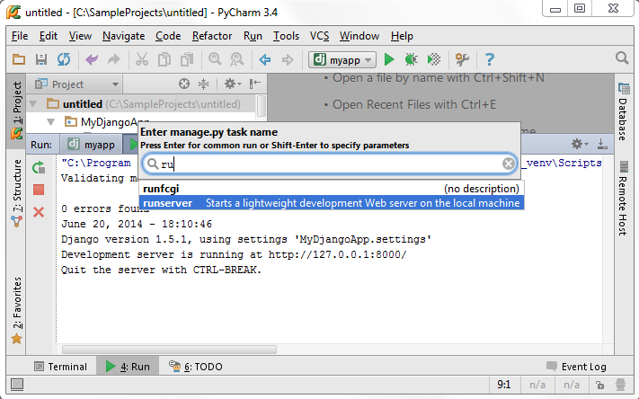
11、创建一个模型
接下来，打开并编辑（open for editing）models.py文件，注意此时Pycharm已经实现导入好了相关库，然后键入以下代码：
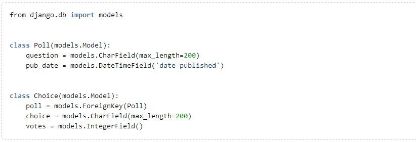
事实上直接对上述代码进行复制粘贴即可，不过这里推荐大家手动输入以体会Pycharm强大的拼写提示功能：
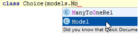
12、创建一个数据库
接下来我们需要为新建模型添加一个表单。再次使用Ctrl+Alt+R快捷键：
首先从提示列表中选择sql，然后选择预期的应用名称：
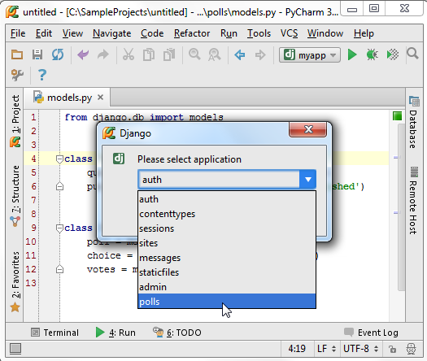
这条命令会为当前类自动添加SQL声明：
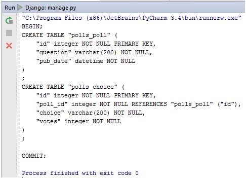
第二步，在提示列表中选择syncdb语句，在提示列表中进行列表的创建，显示结果如下：
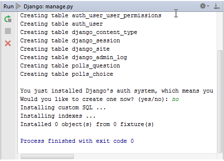
13、完善管理控制函数
由于我们需要对应用进行账户管理，Pycharm已经在urls.py文件中定义好了相关命令。
然而，我们需要编辑函数的admin功能。在polls文件夹下创建一个admin.py的文件（Alt+Ins），然后输入一下代码：
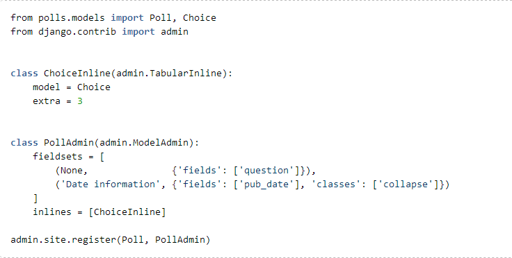
再次展示一下Pycharm强大的拼写提示功能：
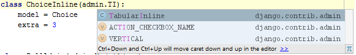
14、运行与调试
现在我们准备前往admin界面进行一些设置了。当然，我们很可能需要先运行Django服务，进入对应文件目录，在地址栏输入完整的URL地址。不过这里Pycharm提供了一个轻量级的修改方法：Django server run configuration
单击主工具栏的 run/debug configurations选项来进入调试配置模式，然后选择Edit Configuration（或者在主菜单中选择Run→Edit Configurations）：
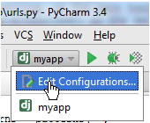
在 Run/Dug Configuration dialog box对话框中，输入配置方案名称（这里为myapp）、默认的浏览器（勾选Run browser选项），个性化定制我们的节点界面：
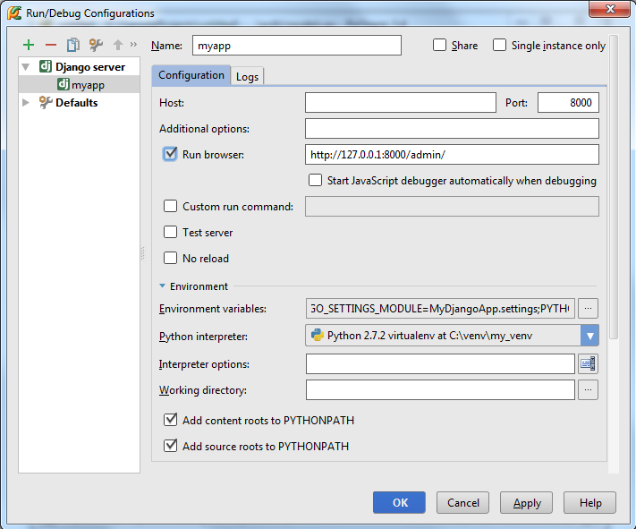
15、加载用户界面
加载并运行这个应用，按下Shift+F10或者主工具栏中的run按钮，打开标准的administration页面，而且必须登录。接下来你可以创建一些polls并为其制定相应的问题及候选项：
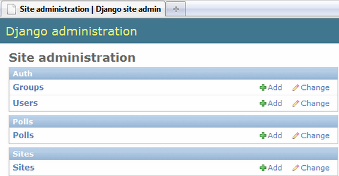
16、创建视图链接
接下来我们准备为应用添加一些子视图，让它拥有"index"、"details"、"results"、"votes"等子页面。首先，我们向urls.py文件中添加这些子页面的模式（在Project窗口中选中该文件然后按F4）：
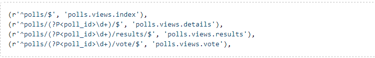
这些模式所涉及的页面目前还并不存在，因此需要手动向其中添加一些方法并进行模板关联，这些操作在Pycharm的帮助下会变得异常简单：你只需将鼠标指针悬停在一个未定义（Pycharm会高亮显示那些unresolved reference的代码），这是会亮起一个黄色的小灯泡，这就意味着Pycharm在此准备了一个快速提示，单击小灯泡（或者按下Alt+enter）：
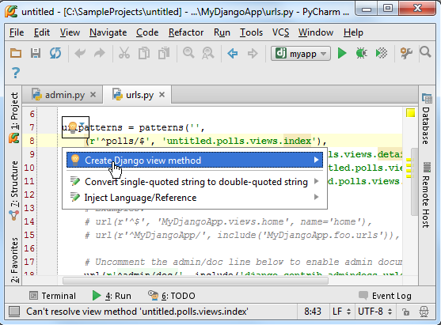
选择Create Django view method选项来在views.py文件中创建一个视图的成员方法，并与特定的模板文件相关联。
接下来我们会看到以下变化：
templates目录不再为空，其中包含了我们创建的根模板文件。
views.py文件中已经包含了根视图的相关方法。

除了添加了view的相关方法外，Pycharm还自动导入的Django中的相关操作，并用render_to_response来标记。
注意view method名称左侧的图标，可以通过该图标来查看该方法对应的模板。可以通过Create template<name>命令在快速创建视图以及对应模板，接下来我们向其中写入代码。
例如我们希望看到polls的可用列表，打开views.py，输入以下代码：
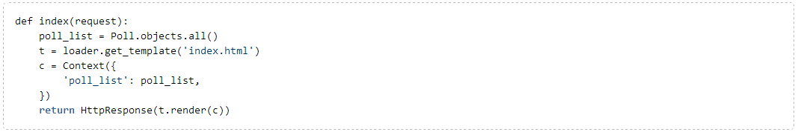
Pycharm会给出快捷的拼写提示：
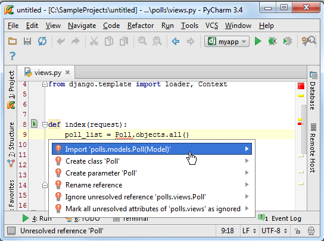
完成后将会有如下显示：
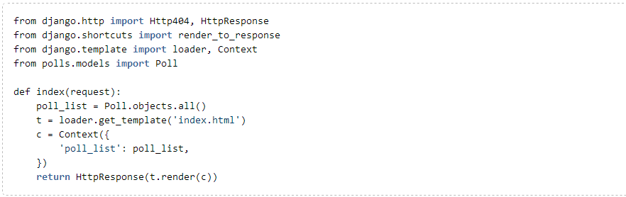
17、创建模板
接下来我们向模板中添加一些代码。打开index.html文件，输入模板代码。这里需要注意的是大括号一定要成对出现，当你输入{%，Pycharm会在输入光标的后面自动添加另一个括号。这里你可以通过Ctrl+Space来进行拼写提示。
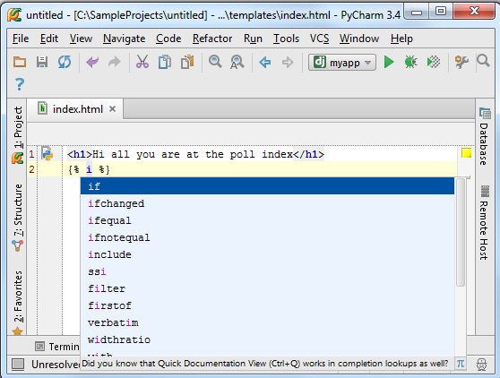
当需要输入HTML类型标签时，PyCharm同样设计了帮助系统：
Ctrl+Space调用拼写提示功能。
当输入一个括号时，会自动生成另一个括号以进行匹配
接下来拟至于一步一步晚上你的模板代码，最终结果如下：
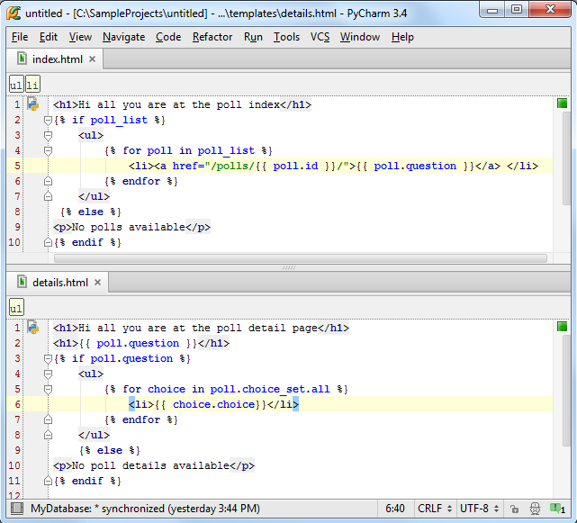
18、大功告成
让我们核实一下polls的变量列表，发现我们的admin能够正常使用，并且能够在地址栏中显示对应的URL地址（/admin/, type /polls/）：
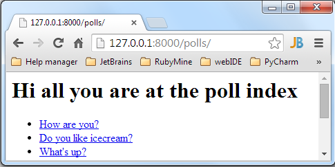
单击以查看详细信息：
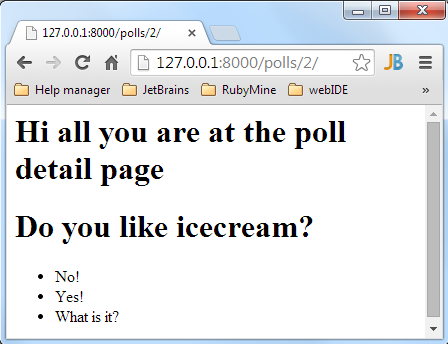